✦ Laboratorio de Informática · 5to Año · 2026 ✦
Bitácora de
Hardware
Santino Ponce — Diagnóstico · Armado · Mantenimiento · IoT
PC Santino
Diagnóstico de Componentes
Especificaciones técnicas completas del equipo ensamblado para el laboratorio.
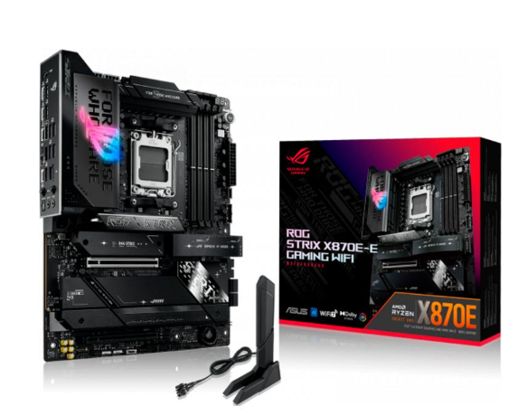
Placa MadreASUS ROG STRIX X870E-E GAMING WIFI DDR5 AM5
Socket AM5 · PCIe 5.0 · DDR5 · Wi-Fi 7
Investigación ↗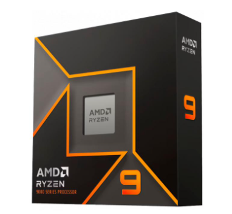
CPUAMD Ryzen 9 9950X — 5.7 GHz Turbo
Socket AM5 · Arquitectura x86-64 · Sin cooler incluido
Investigación ↗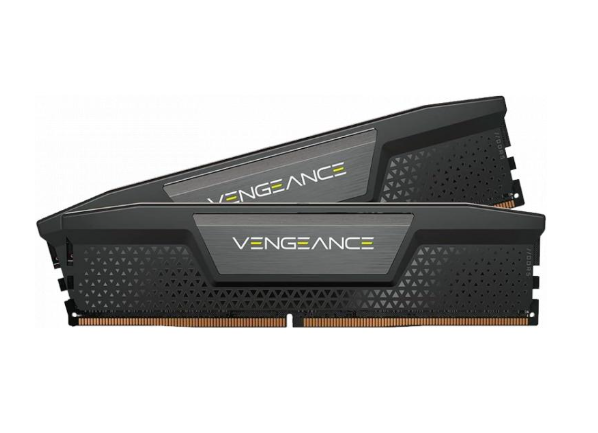
Memoria RAMCorsair Vengeance DDR5 64 GB (2×32 GB) 6000 MHz
CL40 · AMD EXPO / Intel XMP 3.0 · 63.8 GB utilizable
Investigación ↗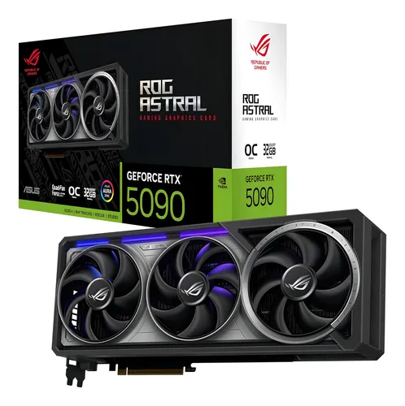
GPUASUS ROG RTX 5090 32 GB GDDR7 ASTRAL OC
GeForce RTX 5090 · GDDR7 · PCIe 5.0
Investigación ↗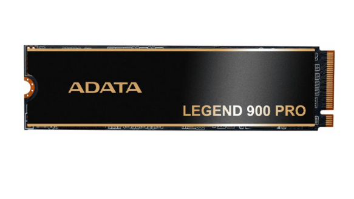
AlmacenamientoADATA Legend 900 PRO 4 TB NVMe M.2
7400 MB/s secuencial · PCIe Gen 4 x4
Investigación ↗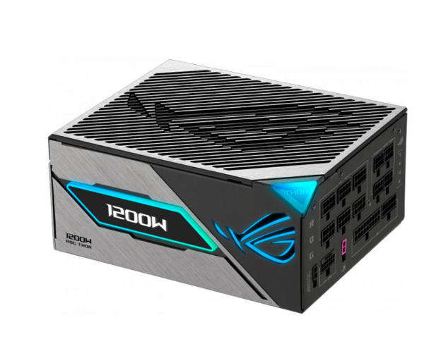
FuenteASUS ROG Thor 3 1200 W 80+ Platinum III
Full Modular · ATX 3.1 · PCIe 5.1
Investigación ↗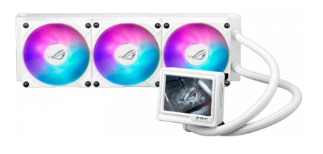
RefrigeraciónASUS ROG RYUJIN III 360 ARGB EXTREME White
AIO Líquida · 360 mm · ARGB
Investigación ↗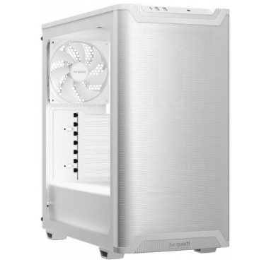
GabineteCorsair 9000D RGB TG Airflow Super Full Tower
Vidrio templado · ATX · Airflow optimizado
Investigación ↗Dispositivos de
Entrada / Salida
Interfaces físicas de comunicación entre el usuario y el sistema.
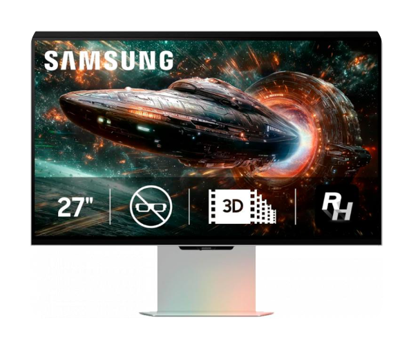
Salida — VideoSamsung Odyssey 3D G90XF 27" UHD 4K
3 unidades · Fast IPS · 165 Hz · 1 ms · G-SYNC / FreeSync
Investigación ↗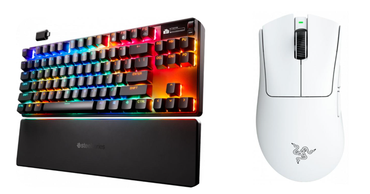
EntradaKit Teclado & Mouse
Conectividad USB Bluetooth / Inalámbrico 2.4 GHz
Investigación ↗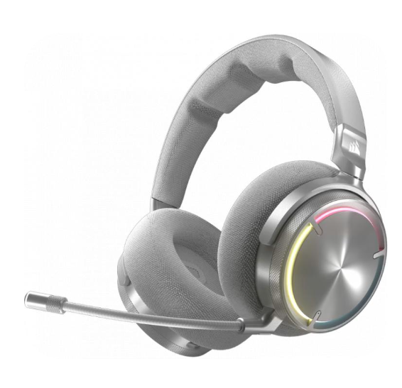
Entrada / Salida — AudioCorsair Virtuoso MAX Wireless
Dolby Atmos · 60 h batería · USB-C / Bluetooth · PC / PS / Switch / Mac
Investigación ↗Base de Datos de Conocimiento
Informe técnico completo sobre arquitectura de buses, funcionamiento de componentes y resolución de cuellos de botella (Bottlenecks).
Leer Informe de Arquitectura ↗Armado de Equipos
Documentación técnica de presupuestos redactada bajo normas APA.
PC Gaming de Alto Rendimiento
Máximo rendimiento gráfico, refrigeración avanzada y componentes de gama entusiasta sin restricción de presupuesto.
Ver Informe APA ↗PC de Oficina / Ofimática
Enfoque en durabilidad, eficiencia energética y la mejor relación costo-beneficio para entornos de trabajo.
Ver Informe APA ↗Diagnóstico y
Mantenimiento
Procedimientos técnicos realizados sobre equipos reales en el entorno de laboratorio.
Ficha Práctica de Hardware
Reconocimiento visual e inspección de componentes internos en equipos de descarte del laboratorio.
Ver Ficha ↗Manual del Técnico
Protocolos de diagnóstico, desarme, uso del multímetro y recuperación de datos mediante Dongle.
Leer Manual ↗ Reparación
Reparación
Soldadura y Recuperación
Desoldadura de componentes y reparación de pistas en placas base averiadas de descarte.
PDF Teórico Completo
Funcionamiento interno, arquitectura de componentes, tipos de memoria y resolución de cuellos de botella.
Descargar PDF Teórico ↗Proyectos de
Electrónica Aplicada
Programación en C++ y diseño de circuitos para resolver problemas del mundo real.
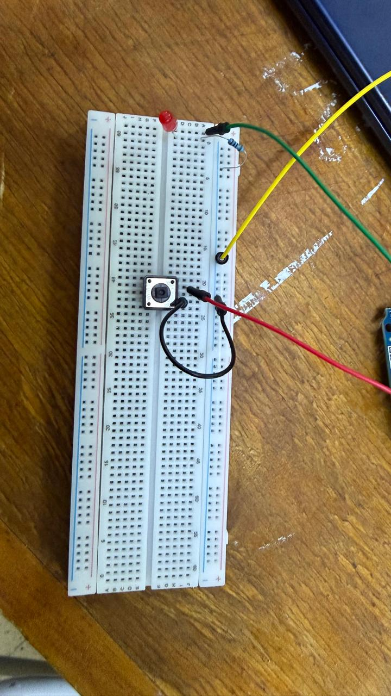
AccesibilidadTrabajo de arduino, medidor de reaccion
Hardware: Arduino UNO · Led Rojo · Resistencia 220 Ω · Cable Jumper
Lógica: Medir la reaccion mediante el tiempo de respuesta del usuario.
Ver Código y Circuito ↗ Domótica
Domótica
Basurero Inteligente Automático
Hardware: Arduino Uno · Servomotor SG90 · Sensor de proximidad IR
Lógica: Apertura automática de la tapa al detectar movimiento del usuario.
Ver Código y Circuito ↗